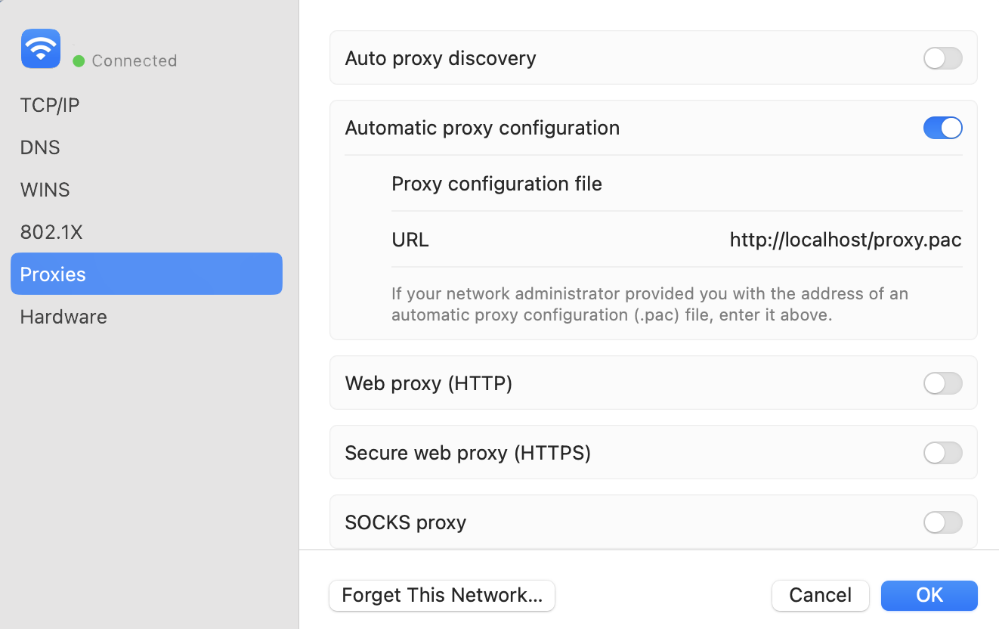

Mac 上使用 naiveproxy 及代理配置
Naiveproxy 是一种科学上网方式，但是其没有合适的客户端可用。虽然可以使用 qv2ray 然后使用 naive 的插件方式进行，但是我个人觉得其有点过于笨重，导致我不怎么想使用 qv2ray。
如果不使用 qv2ray，那只能使用 Terminal 开启以下的命令来进行科学上网。
cd ~/naive
./naive config.json
以上命令执行完并不能使你的 Safari 科学浏览网页。
如果你不使用 Safari 浏览器而是 Chrome 或者 Firefox，那么可以使用 Switchyomega 这个插件，关于它的具体使用方法可以参见 Switchyomega 主页，这里不详述。
那么要怎么才能使 Safari 也可以正常的科学上网呢？答案是使用 MacOS 自带的 Proxies 设置。

Figure 1: Proxies 设置界面
我设置的 naiveproxy 工作在 1080 端口，在上面的 Proxies 界面中，我尝试使用了 http 和 https 两种设置，但是都不能使 Safari 正常的工作。后来看到有 Automatic proxy configuration 这个选项，其要求是使用 pac 文件来进行科学上网。
Pac 文件怎么获取呢？我目前的方式是使用 Switchyomega 这个插件导出了一份 proxy.pac 文件来使用。暂时不知道如何不使用它来获取一份 proxy.pac 文件，或者我给你一份我使用的？
那么有了 proxy.pac 文件，需要将其放置到下面的位置当中。
cp proxy.pac /Library/WebServer/Documents/
你还需要确认你的 macos 上是否开启了 apache 服务器。
sudo apachectl start
若返回下面的，则开启成功。
/System/Library/LaunchDaemons/org.apache.httpd.plist: service already loaded Load failed: 37: Operation already in progress
在 Proxies 界面中将 proxy.pac 的地址填进去，则可以使 Safari 正常上网。若遇到不能开启科学上网的网页，则需要根据 proxy.pac 的规则，更新 proxy.pac 文件。
走到这一步，己经完成了一大半。至于为什么我不使用 Chrome 浏览器，有两个原因，一个我使用 Bitwarden 管理自己的密码，在 Chrome 上使用该插件不能结合 MacOS 的指纹硬件开启，需要自己手动输入 Master password。或者需要在后台开启 Bitwarden 的桌面客户端。另外一个 Chrome 上的网页翻译没有 Safari 的好用，经常有时候开启了翻译没有反应。
己经可以使浏览器正常使用，但是 Terminal 终端还是不能进行代理上网。我根据 Mac 终端代理设置 这篇文章进行了相应的设置，使得 Terminal 终端也可以正常代理上网。
需要在终端中执行：
export http_proxy='http://localhost:8118' export https_proxy='http://localhost:8118'
若要取消使用终端代理：
unset http_proxy unset https_proxy
或者可以使用下面的设置，更方便一些：
# proxy on proxy () { echo "start use privoxy proxy" brew services start privoxy export no_proxy=localhost,127.0.0.0,127.0.0.1,127.0.1.1,local.home export http_proxy=http://localhost:8118 export https_proxy=http://localhost:8118 } # no privoxy noproxy () { echo "stop use privoxy proxy" brew services stop privoxy export http_proxy= export https_proxy= }
至此，Safari 和 Terminal 都可以正常科学上网。